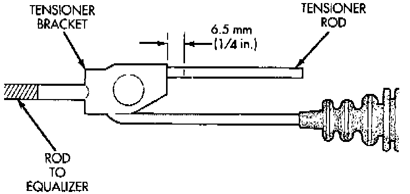

Parking Brake System: Adjustments
NOTE: Parking brake adjustment is only necessary when the tensioner, or a cable has been replaced or disconnected for service. When adjustment is necessary, perform the following procedure for proper parking brake operation.1. Raise vehicle.
2. Back off tensioner adjusting nut to create slack in cables.
3. Remove rear wheel/tire assemblies and remove brake drums.
4. Check rear brake shoe adjustment with standard brake gauge. Excessive shoe-to-drum clearance, or worn brake components will result in faulty parking brake adjustment and operation.
5. Verify that parking brake cables operate freely and are not binding, or seized. Replace faulty cables, before proceeding.
6. Reinstall brake drums and wheel/tire assemblies after brake shoe adjustment is complete.
7. Lower vehicle enough for access to parking brake lever. Then fully apply parking brakes. Leave brakes applied until adjustment is complete.
Parking Brake Tensioner Rod Adjustment:

8. Raise vehicle and mark tensioner rod 6.5 mm (1/4 inch) from tensioner bracket.
9. Tighten adjusting nut at equalizer until mark on tensioner rod moves into alignment with tensioner bracket.
10. Lower vehicle until rear wheels are 15-20 cm (6-8 inches) off shop floor.
11. Release parking brake lever and verify that rear wheels rotate freely without drag.
12. Lower vehicle.
NOTE: Do not loosen/tighten equalizer adjusting nut for any reason after completing adjustment.